sept 2020 - may 2026


oct 2025 - may 2026
checkout: upsells
Context & Role
Kajabi gives creators everything they need to sell courses, coaching, memberships, and digital products in one place. Upsells are a key revenue lever, but the experience hadn’t been updated in years. The generic template with limited customization made the upsell feel disconnected from a creator’s brand at a critical moment → right after checkout.
The revamp introduced real customization: fonts, colors, and styling alongside a rebuilt creation flow and new analytics. Beta ran from March 2026, followed by GA in April.
I was the solo designer, owning the end-to-end experience for creating upsells, linking them to offers, and customizing the upsell page. I also shipped three rounds of UI polish. I wasn’t originally staffed on the project. I took it on top of my payments work after the checkout designer transitioned off the team.
10.88%
Average conversion rate
$256K
Total GMV
2,149
Upsell purchases
*Metric reflects one month of beta data. Figures have very likely shifted since.
On the left, the merchant's upsell creation experience; on the right, the upsell customers see at checkout.
Problem
-
Limited customization.
Outdated, generic templates made upsells feel disconnected from a creator’s brand, limiting their ability to create a compelling post-purchase experience and optimize for conversion and AOV.
-
Creating upsells was tedious and repetitive.
Upsells weren’t reusable. Creators had to manually create a new upsell from an offer each time, making it time-consuming to maintain and scale their upsell strategy.
-
No performance visibility.
There were no upsell-specific analytics, leaving creators without visibility into conversion or revenue impact and no clear way to understand what was working.
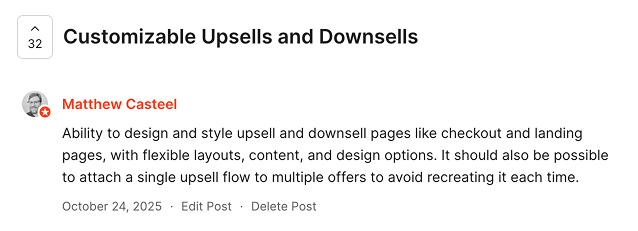
Quote from our customer on limited customization and manual process.
Key decisions
-
Redesign the upsell template to match the creator’s brand.
The existing upsell page relied on a rigid, generic template, with limited customization, that made it look disconnected from the rest of a creator’s site. I redesigned the template with updated controls that gave creators meaningful control over the page, including layout, typography, colors, imagery, content, and sections. Rather than adding a long list of one-off settings, we brought the upsell experience into the same flexible Builder model creators already use elsewhere in Kajabi.
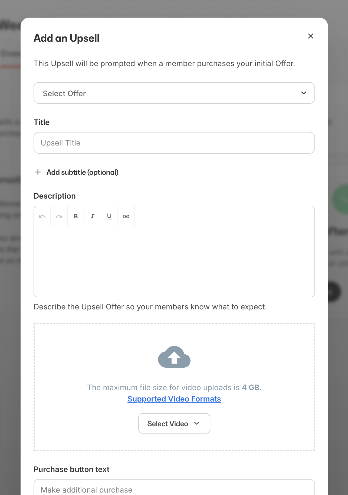
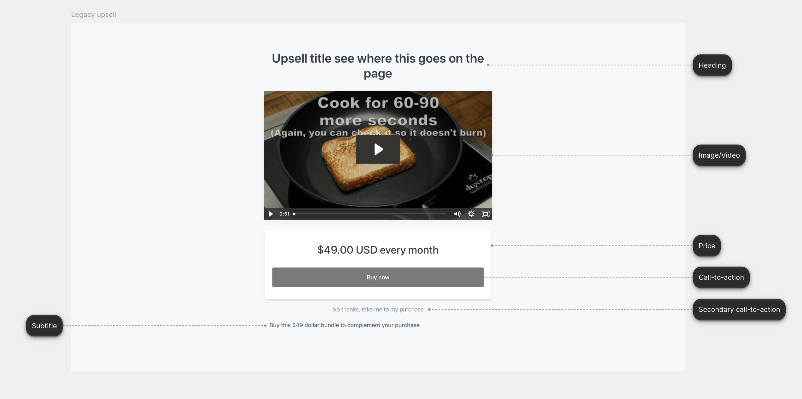
On the left is current upsell creation experience. The one next to it is the upsell page customers see, with annotations pointing to what the controls map to.
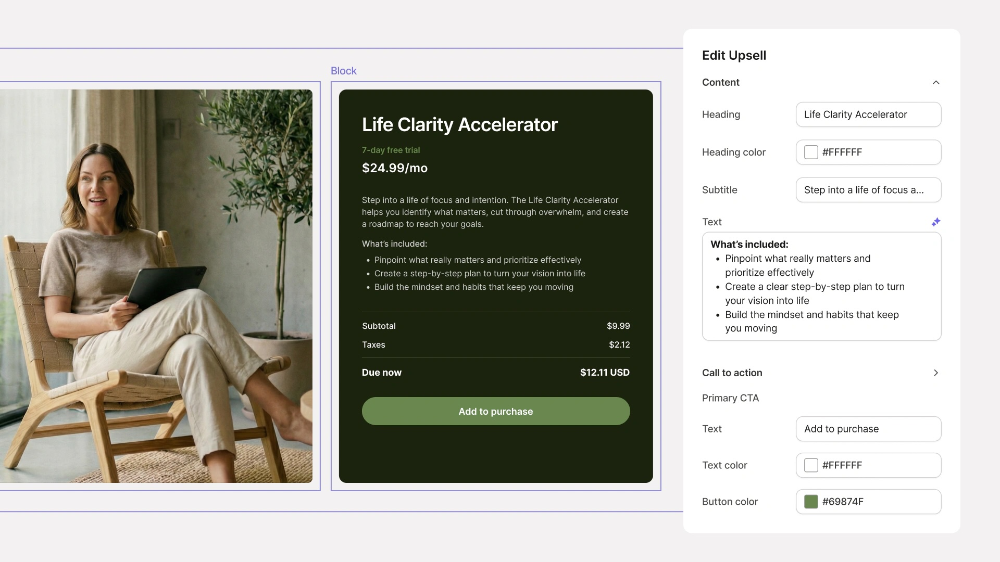
The updated, modernized upsell page with branding already applied and additional customization options if creators want to customize further.
Key decisions
-
Make upsells reusable.
Previously, creators had to recreate an upsell for each offer. We separated the upsell from the offer so creators could create it once and reuse it across multiple offers. This also meant changes could be made centrally and automatically reflected wherever the upsell was used, making the system easier to maintain and scale.
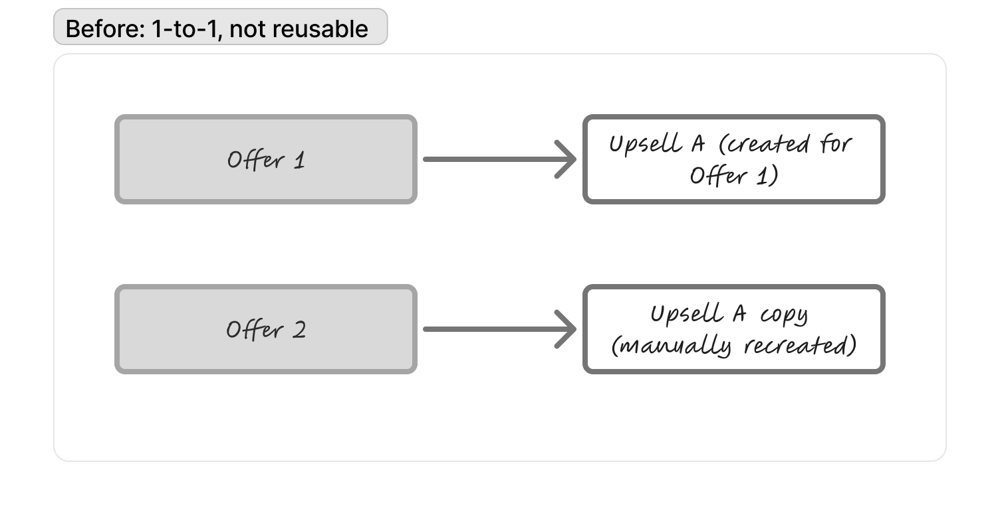
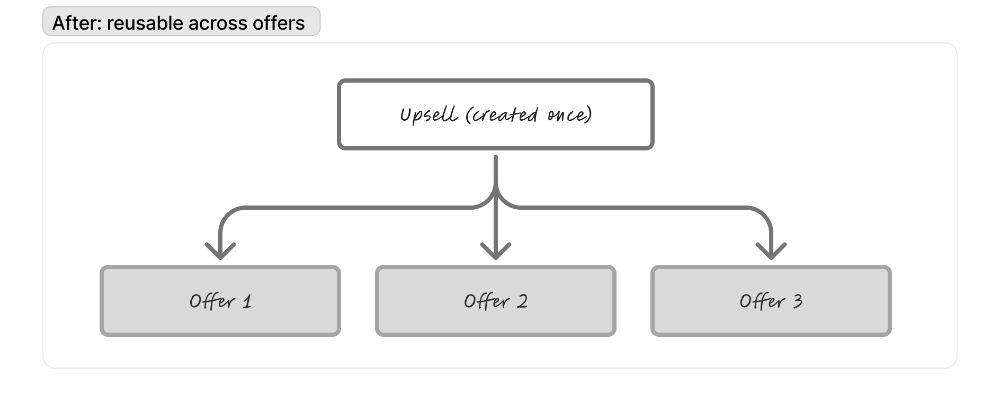
Key decisions
-
Give creators visibility into performance.
An upsell is only useful if creators can understand whether it’s working. We added purchases, conversion rate, and revenue at both the overall and individual upsell level, giving creators a way to measure performance and iterate on their offers.
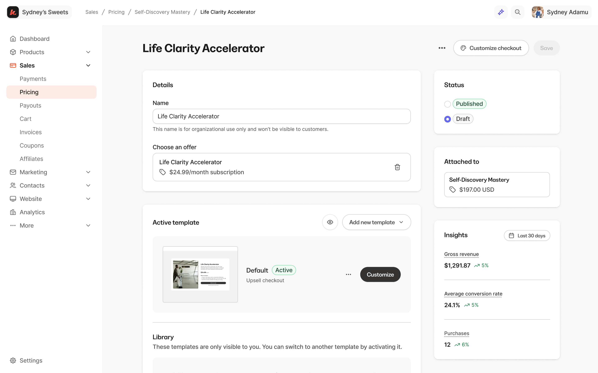
An individual upsell page where we now surface metrics such as purchases, conversion rate, and revenue.
Key decisions
-
Call the experience “Upsells”.
The biggest challenge in this project was landing on the correct verbiage for the upsell creation experience as it relates to Offers. We explored several naming directions, including “Upsells & Downsells” and “Post-Purchase Offers”. After some debate and back-and-forth, we landed on “Upsells” because it was the most familiar term for creators. This simplified the mental model, but meant treating downsells as a use case of the same page rather than a separate page type. The tradeoff that we made is de-emphasizing the distinction between upsells and downsells upfront. We assumed creators would use the same reusable page for both, giving us a more flexible system that could eventually support an upsell funnel builder—where the same page can function as either an upsell or downsell depending on where it appears in the funnel.
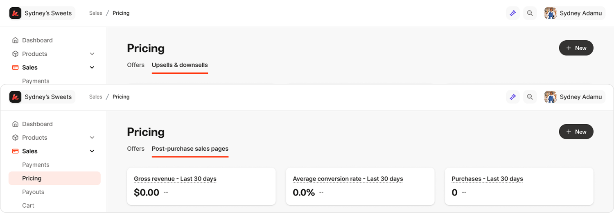
Final design where we landed on Upsells and also bundled Offers and Upsells under the new umbrella → Pricing.
Outcome
- 10.88% conversion rate. More than 1 in 10 presented upsells converted, with a 12.71% conversion rate at the first upsell step and 4.29% at the first downsell step.
- $256K GMV in the first month. The new experience processed $256,237 in GMV within its first month, with an average accepted upsell value of $123 and downsell value of $58.
- 10,639 accounts enabled. The experience reached 10,639 accounts across 15,708 sites, representing 60% of accounts with at least one upsell.
- 28K+ upsells migrated or created. Creators migrated or created 28,233 upsells, with 17,487 actively published.
- Attach rate continued to grow post-launch. Upsell attach rate increased from 2.09% to 2.50% between March and June, a 0.36 percentage-point increase YoY. Combined upsell + downsell attach rate reached 2.63%, up 0.39pp YoY.
- Revenue continued to grow YoY. Upsell GMV reached $8.7M YTD, up 11% YoY, while downsell GMV reached $331K, up 28% YoY.
Reflection
This project was a strong example of what’s possible when design and engineering collaborate closely from the start. Aside from our Commerce squad, we also got help from another engineer in Kajabi who had deeper expertise in Kajabi’s themes and templates, which helped us navigate the technical complexity of the template redesign.
I also pushed myself beyond the typical designer role by diving into the code and learning how to contribute to production PRs. Working directly with engineers taught me better practices for structuring, reviewing, and shipping UI changes, and gave me a much stronger understanding and empathy of what it takes to bring a design from Figma into a production system.
The strongest signal for me was that the product continued to gain traction after launch, not just through the initial migration, but through steadily increasing attach rates. That reinforced that the redesign wasn’t simply a visual refresh; it created an experience creators continued to use and build on.
Overall, the project reinforced how much stronger the work becomes when design, product, and engineering are solving the problem together. It also gave me more confidence working directly in the codebase and thinking about the full path from design decision to shipped product.
oct 2025 - may 2026
checkout: order bumps
Enabled order bumps at checkout to lift average order value.
On the left, the merchant's order bump creation experience; on the right, the order bump customers see at checkout.
apr 2026
media library
AI-prototyped concept for managing custom Media Library views.
Built using V0 to demo the micro-interactions for creating, saving, removing, and deleting views.
jan - sep 2025
affiliate payouts
Context & Role
Owned end-to-end design of Kajabi’s new affiliate payouts system. Partnered with PM from discovery through launch. Business driver: 2025 strategy to grow GMV - 22% of customers ran affiliate programs but only 6% used Kajabi’s built-in feature (~$130M off-platform GMV opportunity).
9%
Growth MoM
$400K
Paid commissions
$4.3M
Total GMV
Snippet from the marketing video for the Sep 2025 launch.
Problem
Creators had no way to efficiently manage payouts. Payouts being manual was the top pain point. Customers really wanted the option for Kajabi to automate this and help them pay out their affiliates on their behalf.

Example report customers download today, then cross-check against transactions manually.

Screenshot of a customer walking through a competitor’s payout feature
Key decisions
- A system that supports both Manual and Automatic payout
- A payout flow for Manual that allows customer to cross-check transactions
- Setting a schedule for Manual
- Setting a schedule for Automatic
- View and export transactions and payouts

Dashboard widgets that offer quick entry points for Manual and Automatic payout.
Setting up the schedule for manual payouts, and how customers complete a manual payment to their affiliates.
Outcome
- Creators enabled 1,000 manual payouts and 466 automatic payouts.
- Creators paid out $400K in commissions,
- The total Gross Merchandise Value (GMV) reached $4.3 million, indicating strong performance and engagement.
- We also observed a 9% growth month-over-month from September to October, highlighting the positive trend in our affiliate activities.
jan - sep 2025
affiliate resource and bounty program
Context & Role
Aside from affiliate payouts, I also reimagined the analytics dashboard, and workflows for the creator to manage communication with their affiliates as well as a bounty program.
Added new set of metrics to the overview, such as leaderboard and top selling offers.
A bounty program letting customers set up time-bound rewards for their affiliates.
Under Settings, ability to add a memo and resources to communicate with affiliates.
sep - dec 2025
kajabi capital
Shipped Kajabi Capital, an end-to-end loan experience, partnering with Parafin.
$1.98M
Total originations
170
Loans issued
$12k
Median loan


Dashboard entry point, marketing page, and mobile designs.
nov 2024
payments onboarding
Context & Role
Led 0–1 design for Kajabi Payments, our payments infrastructure. Owned onboarding for new and existing creators. Partnered with PM to drive strategy. US launch Jan 2024 — now core monetization layer for Kajabi.
58.31%
User penetration
11.77%
Increased adoption
$1B
Creator volume processed
A look at the rebranded Kajabi Payments onboarding experience, where the user selects UAE, which happened to align with Kajabi's launch in the region.
Problem
- Onboarding was fragmented and non-linear: users connected Stripe first, got bounced back to Kajabi with “incomplete setup” errors, and often never finished — thinking they were done.
- Stripe gave barely any education about which business type or structure to choose from.


Key decisions
- Swapped the order: business info + contextual help on business structure + T&Cs before Stripe connect, instead of Stripe first.
- Bundled similar actions together to reduce steps and cognitive load.
- Made Stripe signup the last step, so users arrive with everything ready.

Tradeoff
Asking for more info up front risked drop-off, but context and guidance reduced confusion enough that completion went up.
Outcome
- 58.31% penetration, surpassing Stripe by 21%
- $1B+ creator volume processed
- 11% lift in KP adoption from the redesign, fewer CX tickets on onboarding
- New customers now default into KP with fewer objections; live across CA, GB, AU, UAE, EU
Reflection
If I could do it again, I’d scope the first 30 days post-onboarding into the project from the start, including the monthly payout banner we designed but didn’t ship due to timing, since communication about when money arrives is just as important. Onboarding isn’t a funnel with an exit; it’s the first chapter of the product relationship.
2024 - 2026
payouts
Designed to support multiple bank accounts as well as instant payouts.


On the left shows multiple bank accounts, and on the right is the instant payouts feature.
sep - nov 2024
disputes
Created a system for customers to manage and take action on disputed payments.
18.87%
Dispute win rate
39%
Increase over prior win rate
Disputed transactions at various stages.
sep 2023 - nov 2023
analytics
Context & Role
As the product designer on the Commerce team, I drove the research and design for Kajabi’s Payments overview page, partnering with PM and Engineering on implementation and rollout.
The redesigned Payments dashboard.
Problem
Current Payments dashboard was lacking in terms of features. Engagement with the dashboard was low. Customers have reached out requesting additional functionality such as Total Sales, best-selling Products & Offers, and LTV for a customer. They were also confused about how to navigate to the Transactions, Subscriptions, and the Multi-payments page from the current design. With our redesign, we want to improve the usefulness of the payments dashboard, increase engagement, drive return visits to the dashboard, and improve CSAT.
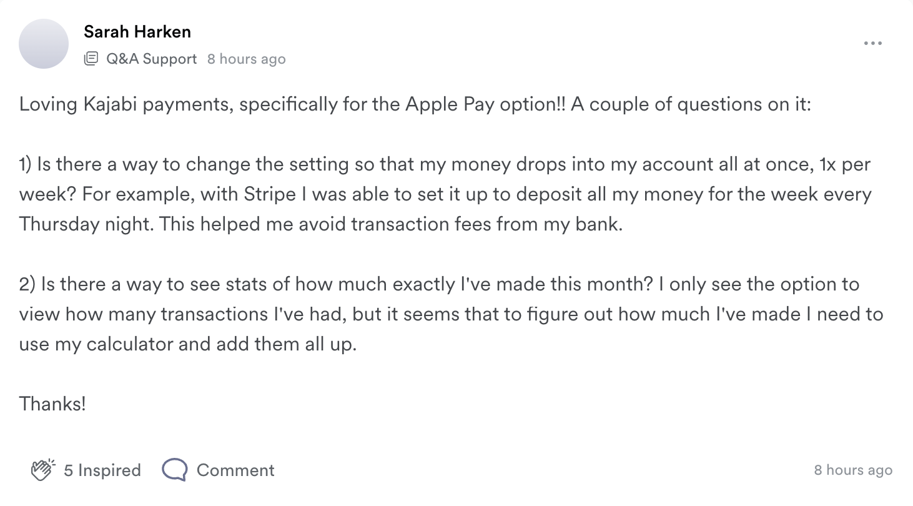
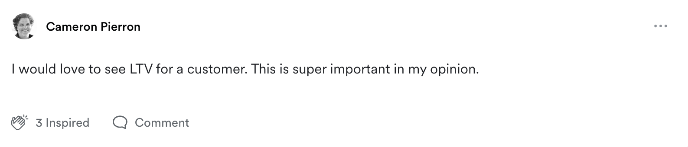
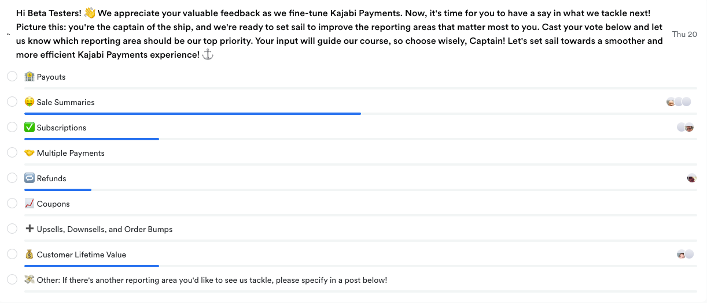
Findings from our poll survey: gross sales and future revenue from subscriptions are the most requested charts.
Key decisions
- Use a modular redesign approach with swappable data viz components that allow for a phased rollout instead of an extensive redesign.
- Display relevant, useful, and actionable data such as customer lifetime value and failed payments.
- Provide a clear navigation for users to easily access different types of payments.
Research
From 10/16 to 11/10/23, I ran moderated interviews with 14 experienced creators ($60K+ revenue, mix of Kajabi Payments and Stripe users) evaluating the new prototype against the current design. My PM also sat in and observed the interviews. The interview sessions also turned out to be a great co-creation experience with our customers, walking them through the prototype let us pressure-test whether the design mapped to their expectations in real time, and their reactions fed directly into the next iteration of the work.
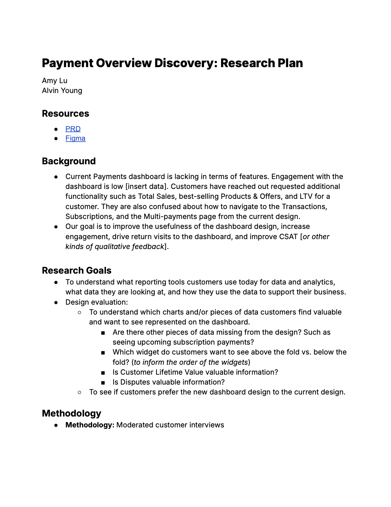
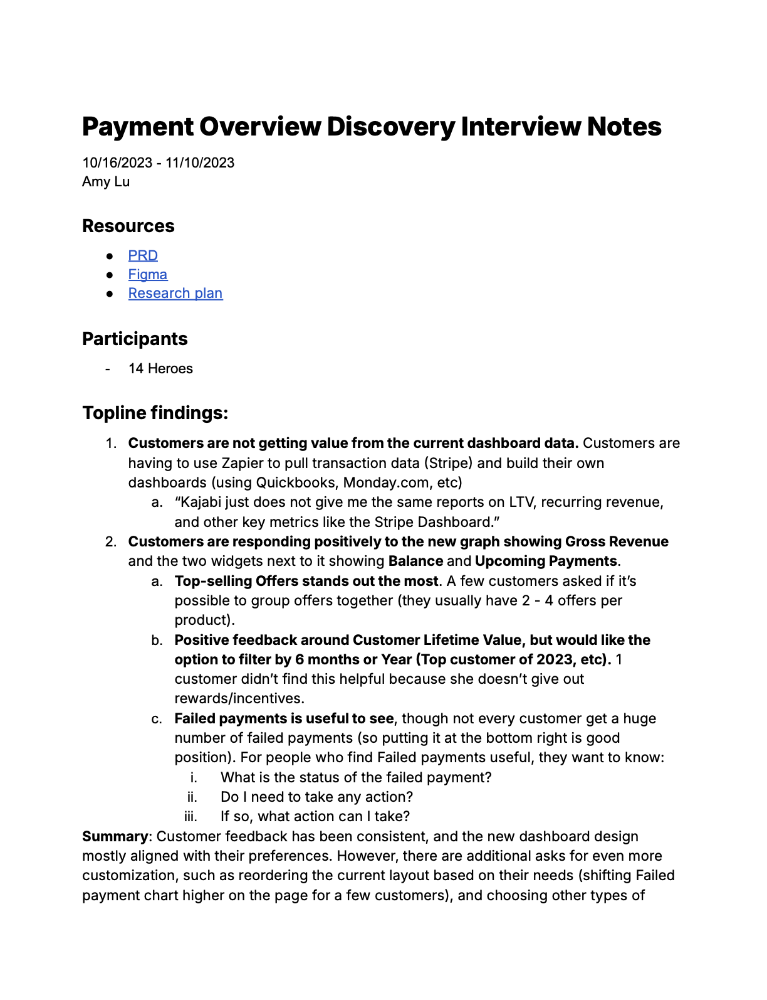
Screenshots of the research plan and the summarized notes from the interviews.
Key findings
1. Customers are responding positively to the new graph showing Gross Revenue and the widgets showing their current balance and upcoming payments.
“I love that [upcoming payments], b/c I’m always planning for the next month. If anything further than that, it’s relying on something not realistic.”
“Upcoming payments is great. I have multi-payments, memberships, recurring subscriptions, I often don’t know what’s coming in.”
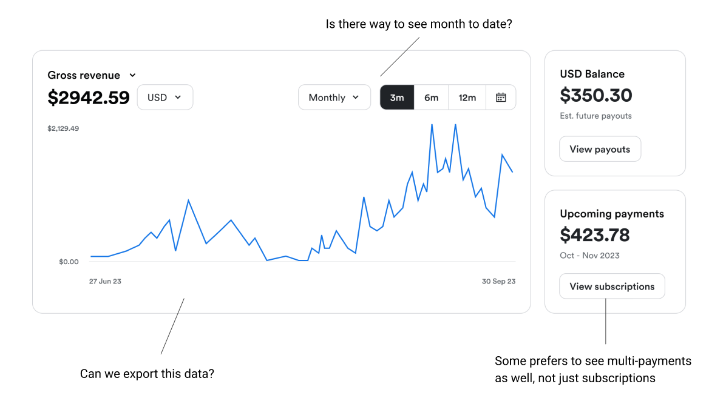
2. Top-selling Offers stands out the most.
“This helps to keep our perspective on what’s selling now, what’s popular. We are always looking for ways to optimize the user experience.”
“Top offers would be good add-ons to other purchases.”
“[This] tells me which offers to be focusing on. If I have offers that are lower, I can adjust accordingly.”
“Can we group Offers together?” Ex: he has the same product but different offers for different months (mastermind for July/August), he wants to be able to group the offers together and see how this product did overall.
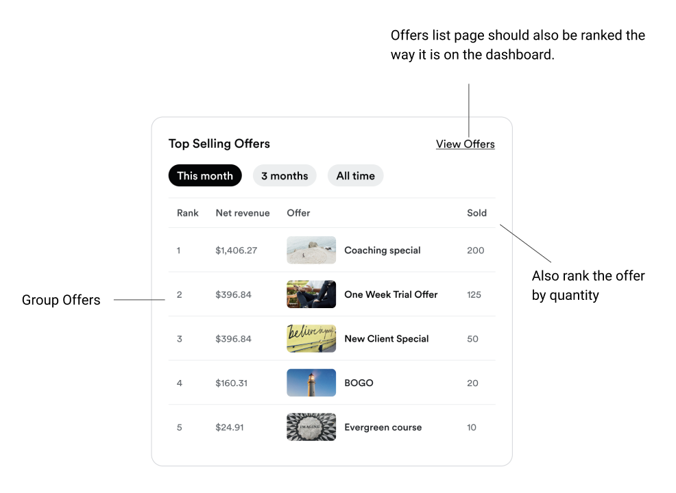
3. Positive feedback around Customer Lifetime Value, but would like the option to filter by 6 months or Year (i.e. Top customer of 2023).
“It tells me who are my contacts, are there certain traits these clients have in common, and how can I use this information to find more clients.”
“It would be nice to see last 6 months, 12 months as well. A customer could’ve only bought everything in the first 2 years and always be at the top of the list.”
“If a customer spent 10k they might’ve left. [I] want to see [who’s] the top this year.”
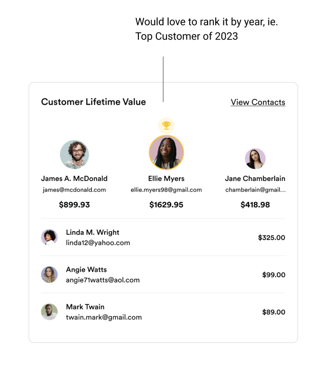
4. Failed payments is useful to see, though not all heroes experience a significant number of failed payments in their lifetime.
For those who find failed payments useful, they want to know:
- What is the status of the failed payment?
- Do I need to take any action?
- If so, what action can I take?
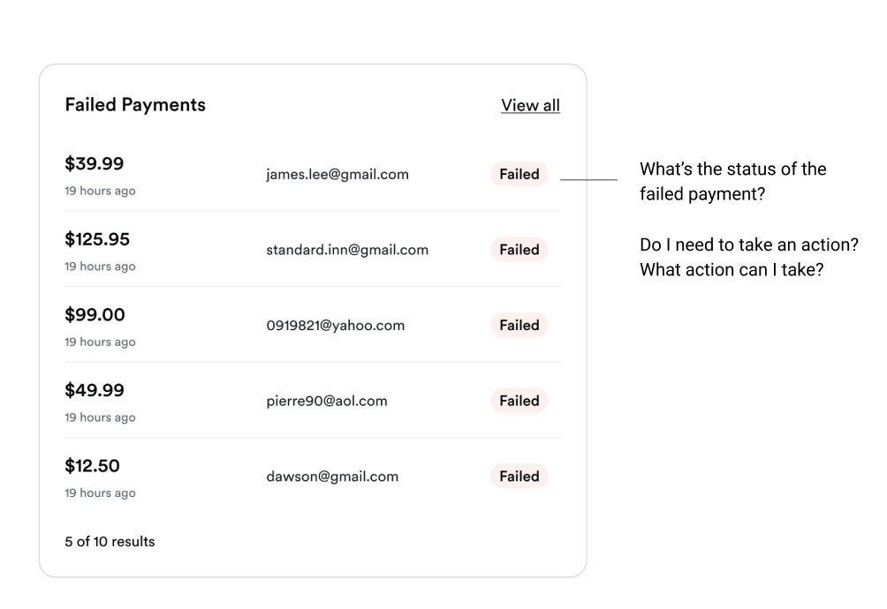
Reflection
Doing this research gave us conviction: all 14 participants preferred the new design, so every decision after that was backed by evidence instead of opinion. I also presented the findings to leadership, which turned the research into shared design visibility for the org, also builds credibility for the team.


Some of the data visualization charts I designed for the Analytics team.
nov - dec 2024
transaction details page revamp
Redesigned the transaction details page's hierarchy for clearer, easier scannability.
A snapshot of what a customer sees after clicking into a sale, with the full breakdown of that purchase.